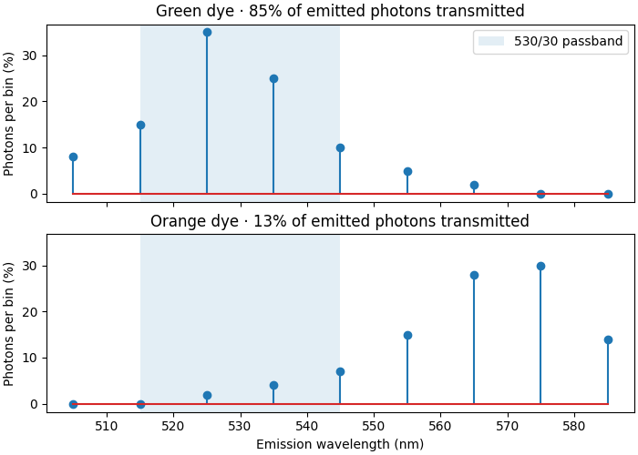

Note
Go to the end to download the full example code.
Define custom dyes and predict spectral spillover#
A nominal 530/30 channel has a center wavelength of 530 nm and a full width of 30 nm. Use two illustrative dye spectra to calculate how much of each dye’s emission enters that channel, including spillover from an orange-emitting dye.
import matplotlib.pyplot as plt
import numpy as np
from FlowCyPy.detectors.photomultipliers import pmt
from FlowCyPy.fluorescence import Bandpass, Fluorophore, Label
from FlowCyPy.samples.beads import microbeads
from FlowCyPy.systems.bd import facs_canto
from FlowCyPy.units import ureg
Specify photon counts in wavelength bins#
Each entry counts photons across a whole bin. The filter acts on the bin’s representative wavelength, exactly as it does during a FlowCyPy acquisition. Both endpoints, 515 and 545 nm, pass the filter.
wavelengths = np.array([505, 515, 525, 535, 545, 555, 565, 575, 585]) * ureg.nm
# The cross sections are illustrative values at the 488 nm laser wavelength.
# Both dyes use prompt emission. To model a measured decay, also pass
# lifetime as a time quantity when constructing the fluorophore.
green_dye = Fluorophore(
name="Green dye",
absorption_cross_section=2e-20 * ureg.meter**2,
quantum_yield=0.8,
emission_wavelengths=wavelengths,
photon_weights=(8, 15, 35, 25, 10, 5, 2, 0, 0),
)
orange_dye = Fluorophore(
name="Orange dye",
absorption_cross_section=1e-20 * ureg.meter**2,
quantum_yield=0.6,
emission_wavelengths=wavelengths,
photon_weights=(0, 0, 2, 4, 7, 15, 28, 30, 14),
)
dyes = [green_dye, orange_dye]
bandpass = Bandpass(center=530 * ureg.nm, width=30 * ureg.nm)
transmitted = bandpass.transmits(wavelength=wavelengths)
Calculate spillover into the green channel#
Normalize each dye to its own emitted photon count. The hard filter passes 85% of the green dye’s photons and 13% of the orange dye’s photons. These fractions describe spectral transmission before geometric collection and conversion to detector voltage.
figure, axes = plt.subplots(
nrows=2,
ncols=1,
sharex=True,
sharey=True,
figsize=(7, 5),
layout="constrained",
)
for axis, dye in zip(axes, dyes, strict=True):
fraction = np.asarray(dye.photon_weights)
passed = fraction[transmitted].sum()
axis.axvspan(515, 545, alpha=0.12, label="530/30 passband")
axis.stem(wavelengths.m_as("nm"), 100 * fraction)
axis.set_title(f"{dye.name} · {passed:.0%} of emitted photons transmitted")
axis.set_ylabel("Photons per bin (%)")
axes[0].legend()
axes[-1].set_xlabel("Emission wavelength (nm)")
plt.show()

Predict the power ratio and check it with single-color controls#
Add a second channel centered at 570 nm with the same aperture and detector response. For a given dye on a single particle, brightness, label count and collection fraction cancel in the green/orange power ratio. Each photon contributes energy proportional to inverse wavelength. Use that weighting when predicting the ratio from the spectra.
instrument = facs_canto(include_shot_noise=False, include_rin_noise=False)
orange_filter = Bandpass(center=570 * ureg.nm, width=30 * ureg.nm)
filters = {
"green": bandpass,
"orange": orange_filter,
}
instrument.opto_electronics.detectors = [
pmt(
name=channel,
phi_angle=90 * ureg.degree,
numerical_aperture=0.8,
signals=("fluorescence",),
optical_filter=optical_filter,
dark_current=0 * ureg.ampere,
)
for channel, optical_filter in filters.items()
]
for dye in dyes:
label = Label(fluorophore=dye, molecules_per_particle=20_000)
beads = microbeads(
name=dye.name,
diameter=300 * ureg.nm,
refractive_index=1.59,
concentration=1e8 * ureg.particle / ureg.milliliter,
labels=[label],
)
instrument.fluidics.scatterer_collection.add_population(beads)
record = instrument.acquire(run_time=200 * ureg.microsecond, random_state=42)
for dye, events in zip(dyes, record.event_collection, strict=True):
assert events.name == dye.name
energy_weights = np.asarray(dye.photon_weights) / wavelengths.m_as("nm")
orange_mask = filters["orange"].transmits(wavelength=wavelengths)
predicted = energy_weights[transmitted].sum() / energy_weights[orange_mask].sum()
measured = (events.get_quantity("green") / events.get_quantity("orange")).m_as("")
np.testing.assert_allclose(measured, predicted)
print(
f"{events.name}: green/orange power ratio {measured.mean():.3f} (predicted {predicted:.3f})"
)
Green dye: green/orange power ratio 12.820 (predicted 12.820)
Orange dye: green/orange power ratio 0.158 (predicted 0.158)
Each ratio uses event-frame optical powers in watts. A voltage ratio from hardware also depends on the two channels’ responsivities and amplifier gains.
Total running time of the script: (0 minutes 1.452 seconds)